基于 brand/logo-mark.svg 原几何(双 320° 互锁弧 R=118 + 中心 spark)设计的循环动效,三批共十三款。 第一批偏"光效循环",第二批按"科技感强化"方向重做(刻度 / 电路 / 信号 / 演化), 第三批补足叙事与氛围语义(接力 / 极光 / 组装 / 开合)。 全部为纯 SMIL 动画的自包含 SVG:无 JS / 无外部 CSS,可直接 <img> 引用、内联进页面或当启动帧素材。 2026-08-28 起全量同步 v2 品牌光照(顶部受光渐变 + spark 辉光)。 在浏览器打开本页即可同时预览全部方案。
星尘点阵聚合 → 结晶成实线环 → spark 点燃(涟漪) → 双彗星运转一圈 → 能量坍缩回收 → 静默期一粒种子微光 → 再度演化。 全程一条 8s 时间线编排(所有动画共用周期时钟,天然无缝循环),适合作为应用主 loading / 启动动画。
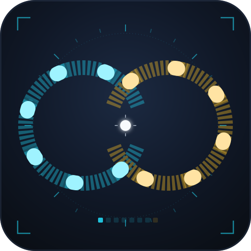
仪表盘语汇:双环切成 10 段刻度(butt 端帽,棱角分明),锐利游标带长余辉扫过; 外圈 24 根径向刻度线、四角取景括号、中心十字准星、底部 8 格状态灯离散点亮(满格重置)。 硬核 HUD 感,适合调试面板 / 专业工具气质。
PCB 语汇:暗格网底、细双股副线夹持主走线、断口焊盘 + 菱形交叉节点; 电流脉冲双环反向环流,每当脉冲抵达节点,节点辉光应答闪烁(相位精确对齐交叉点)。 适合表达"链路 / 连接 / 硬件交互"。
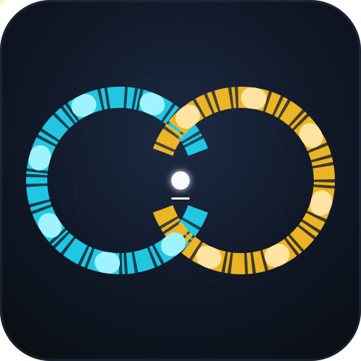
终端语汇:双环化为长短不一的摩斯划,图案沿环双向缓移如数据流; 解码光标高速巡检、底层全弧离散噪声跳变、spark 变终端光标按 1.1s 明灭、外围载波虚线环反向缓旋。 适合"解码 / 解析 / 流式传输"状态。
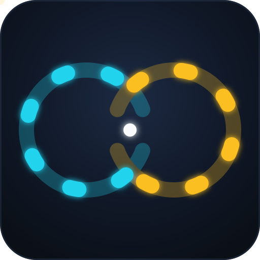
两枚彗星沿双环同向(逆时针)巡游,白色亮头领先、同色光晕拖尾随后,相位相差半圈保持画面平衡; spark 以 2.5s 缓慢呼吸。最"常驻"的一款,适合做加载指示 / 空状态 / 官网循环动画。
spark 以 1.2s 心跳一次,每次跳动向外释放一圈青色声纳波纹(三圈共存、渐扩渐淡); 双环明暗反相呼吸。节奏感最强,适合"正在搜索 / 思考中"的 Agent 状态标识。
六枚光珠(每环三枚、相位交错 60°)沿环公转,各自拖一缕暗淡尾迹; 外加两圈反向慢旋的虚线星环。最有"系统感"的一款,适合多会话 / 多 agent 并行的产品意象。
一段式启动:双环依次自绘(青先琥珀后)→ spark 弹出并放涟漪 → 彗星淡入循环 → 全息扫描光带每 5.5s 自上而下掠过、扫过处笔画被点亮。适合应用启动页 / 首次加载。
叙事性最强:青 / 琥珀两道光从上交叉点同时反向出发,各走长弧 273.4°, 在下交叉点交汇——瞬间爆出冲击波、spark 同步暴胀——随后经短弧回到起点再度启程。每回合 6s。
充能 + 交接:青环从端点匀速充能一圈(亮头与充能前沿经 keyPoints 精确重合)→ 能量汇入中心 spark 暴胀交接 → 琥珀环再充能一圈 → 双色涟漪释放归暗。 读(青)→ 行(琥珀)→ 交接 → 释放,对应工具色语义循环;适合任务流转 / 阶段推进状态。
最纯粹的氛围款:没有粒子与叙事,双环渐变各自绕环心匀速旋转—— 像磨砂玻璃管外有一圈光源缓缓环绕,v2 的"顶部受光"延伸成"光绕管走"; 另有一道 8px 微光带反向滑行形成视差。适合空状态 / 官网 / 常驻背景。 不支持 gradientTransform 动画的环境自动退化为 v2 静态观感。
六段弧片段(每环三段、错相)自四散位置缓出归位 → 一道白光沿双环扫过"焊接"接缝, spark 弹出落定 → 静置 → 片段沿原路退回拆解回收。全程 10% 蓝图底稿指示目标位置。 与演化 Loading(粒子结晶)相对,这是刚性分段装配:会话由多段协作拼接而成。
极简几何 morph:双环开口半角 β 在 20° 与 8° 之间往复——不断闭合、永不闭合, Everlasting 的字面隐喻。圆心与半径恒定,交叉点是两圆交点故纹丝不动(v2 投影全程正确), β 变化只移动端帽缺口;闭合力峰值时交叉点亮起十字星、spark 同步涨大。
logo-flow.svg 的浅底版:600 级渐变(与 logo-mark-light.svg 同步)、浅色 tile、 spark/彗头换深色可读配色。浅色主题 UI / 文档场景的加载指示。
logo-evolve.svg 的浅底版:8s 生命周期编排不变,涟漪/坍缩环/彗头/种子全部换浅底可读配色。
logo-aurora.svg 的浅底版:600 级渐变绕环流不变,微光带与 spark 换浅底可读配色。